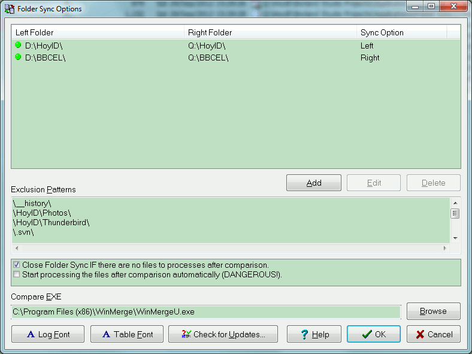
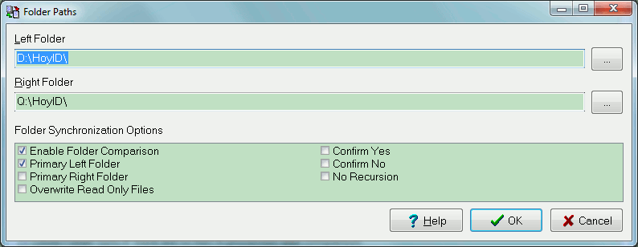
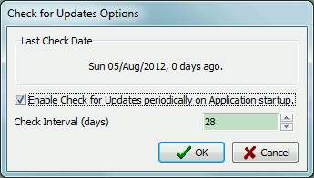

This action allows you to configure Folder Sync.
The dialogue is broken down into the following elements:
This is a list of all the pairs of folders that you wish to have synchronised. To add a new pairs of folders press the <Add> button. To edit an existing folder pairing press the <Edit> button. Finally to delete a dolder pair press the <Delete button.
Pressing the <Add> or <Edit> buttons will display the folder path editing dialogue as below.
In this dialogue you specify the left and right folders to synchronise. If you do not specify any wildcards (semi-colon separated list) then all files will be assumed.
The wildcards can include the asterisk (*) and question mark (?) and you can specify more than one using a semi-colon between them. For instance:
H:\HoylD\Development\*.pas;*.dpr;*.dpk
The option below are specify to this pairing of folders as are as follows:
| Option | Description |
|---|---|
| Enable Folder Comparison | This option enabled or disables a particular folder pairing from being included in the comparison and subsequent processing of files. You can enable and disables the folder pairings by clicking on the green or red circle next to the folder pair in the main options dialogue. |
| Primary Left Folder | This option makes the left folder the original so that files will be deleted from the right folder if they do not exist in the left and files will always be copied from left to right (except where you would be overwriting an newer file). |
| Primary Right Folder | This option makes the right folder the original so that files will be deleted from the left folder if they do not exist in the right and files will always be copied from right to left (except where you would be overwriting an newer file). |
| Overwrite Read Only Files | This option is used in conjunction with the below Confirm Yes/No option to stop you being prompted to overwrite read only files with nonn-read only files. |
| Confirm Yes | This option stops you being prompted to overwrite files and confirms Yes so that all files are overwritten. In order to overwrite a read only files with a non-read onyl file you will need to include the above Overrwite Read Only Files option. |
| Confirm No | This option stops you being prompted to overwrite files and confirms No so that destination all files are NOT overwritten. |
| No Recusion | This option stops the recursion of the sub-folder structures for the specified parent folder.. |
This list allows you to exclude files and folder from all the comparison by specifying tex that would appear in the full path name of the file. Note: these exclusions can not contain a semi-colon. Each exclusion should be entered on a separated line.
These options allow you to specify global options for the application as follows:.
| Option | Description |
|---|---|
| Close Folder Sync IF there are no files to process after comparison. | This option allows you to configure Folder Sync to close if there are no files left to process after the comparison post processing files. |
| Start processing the files after comparison automatically (DANGEROUS) | This option should be used with caution but allows you to start processing the files after the initial comparison with no further interaction. |
This allows you to configure a difference tool like WinMerge or BeyondCompare that can be invoked on a file pairing to show you the difference between the files.
This option allows you to specify the font name and size for the log.
This options allows you to specify the font name, size and style for the font used in the comparison results table.
This option displays the below dialogue and allows you to configure the Check for Updates functionality of the application be specifying whether its enabled and the period of time between check in days.
